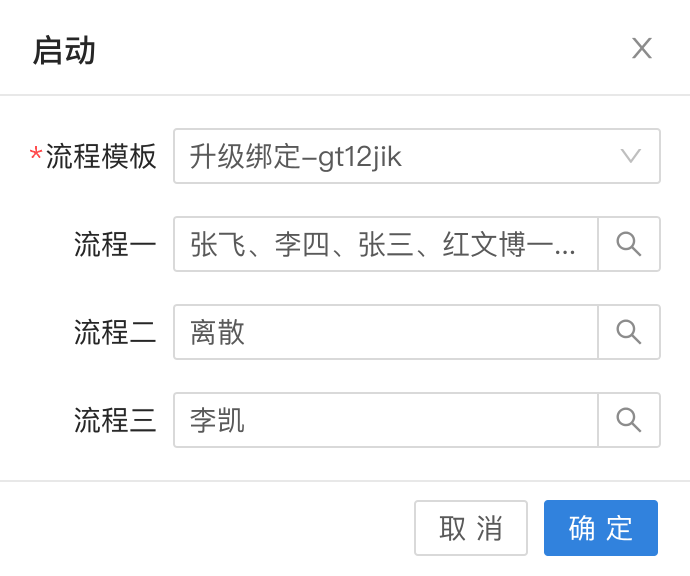
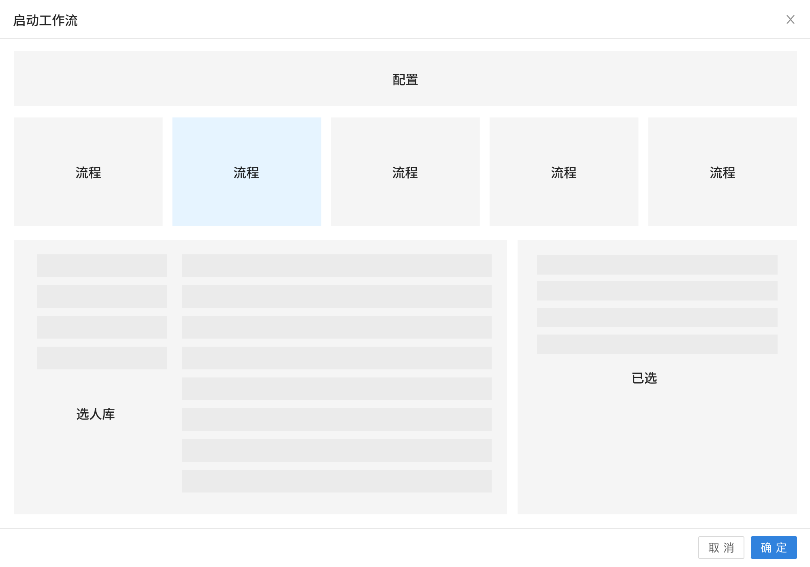
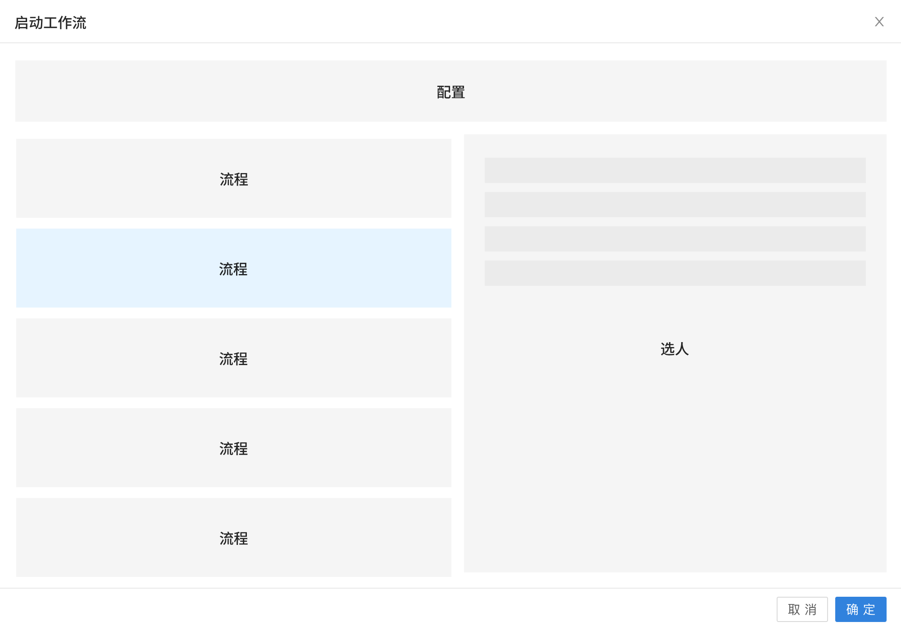
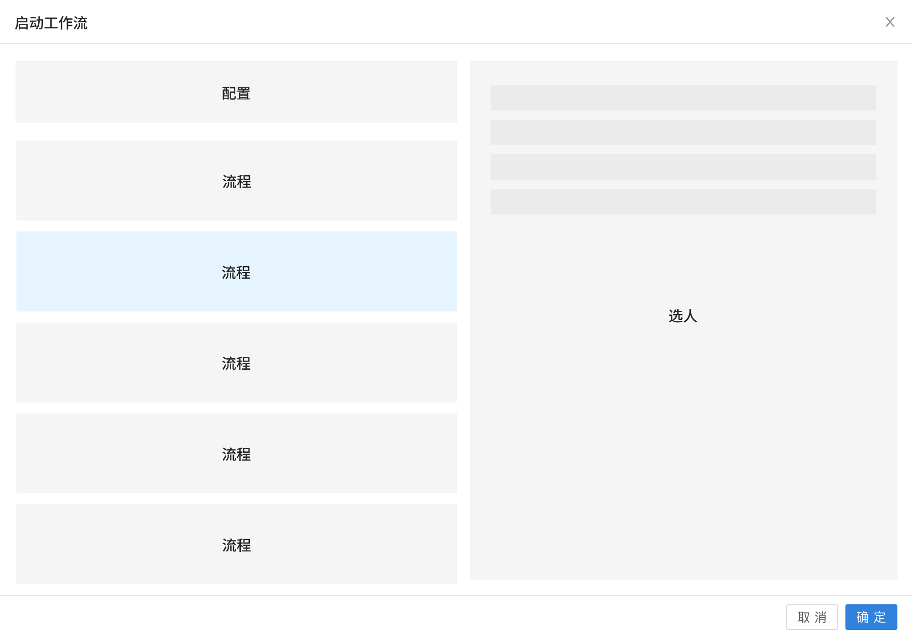
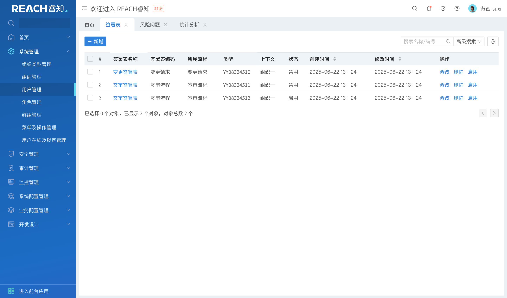
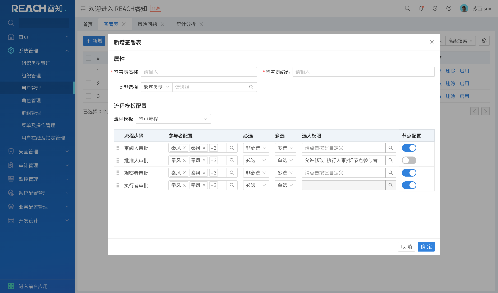
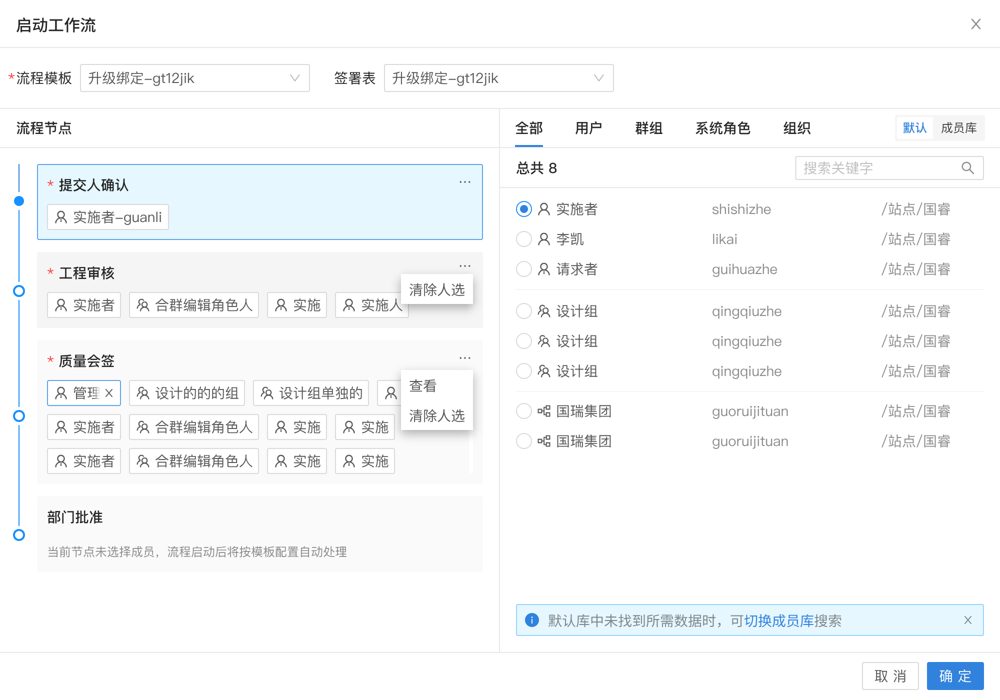
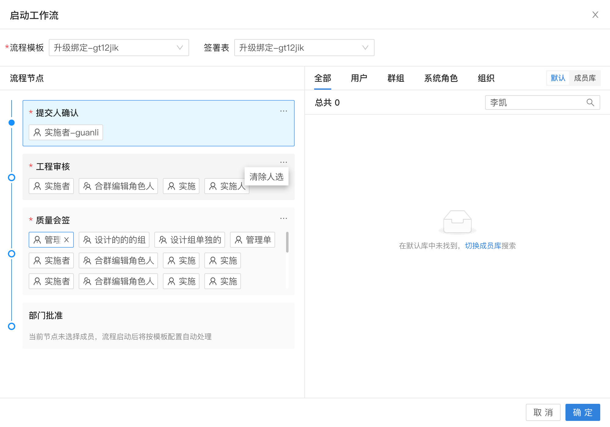
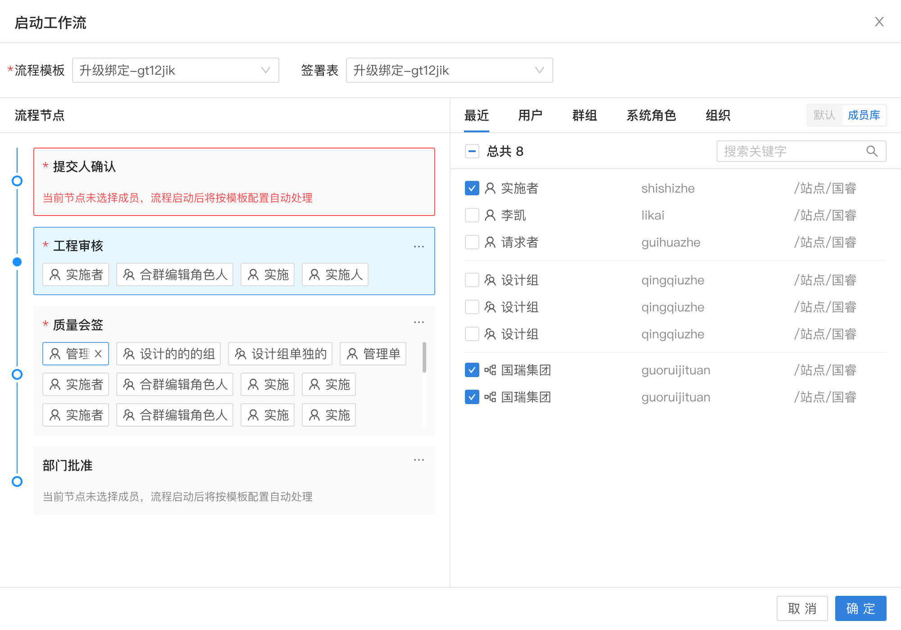
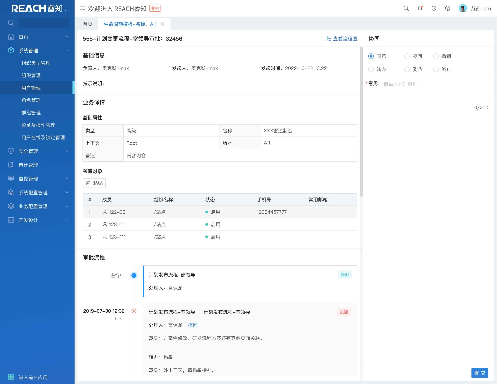

用户缺少的不是入口，
而是启动前的判断依据。
本项目围绕签署表、自动触发、对象级发起、进程页签和历史记录进行重构，目标是减少人工判断和重复选人，使流程发起平均时长下降 30%～40%，发起成功率提升至 95% 以上。
数字主线中的流程能力，正在从“用户手动选择并发起”，转向“按业务阶段自动触发、按对象类型差异化配置”。 在这个变化下，工作流不再只是一个入口问题，而是要同时处理：签署表选择、流程模板绑定、节点成员配置、对象级发起、任务进度查看和历史记录回溯。
本项目围绕签署表、自动触发、对象级发起、进程页签和历史记录进行重构，目标是减少人工判断和重复选人，使流程发起平均时长下降 30%～40%，发起成功率提升至 95% 以上。
生命周期状态、流程模板和签署表配置需要建立稳定映射。
用户卡在启动前的确认阶段，不敢直接提交。
让流程配置从“人工回看”变成“按状态完成”。
研究将流程复杂度定义为用户在启动前需要确认和配置的节点负担。通过可用性 A/B 测试，验证节点状态、选人路径、成员完整展示和成员类型标签对启动效率的影响。
用户真正缺少的是提交前的确定感。

节点状态不清，用户难以判断是否满足启动条件。
选人依赖弹窗，连续配置任务被反复拆分。
成员展示不完整，当前页难以直接核对名单。
成员类型不可见，用户担心选错对象范围。
卡点不是单个搜索按钮，而是节点完整性、成员名单、成员类型和提交风险没有在当前层级被直接说明。
每个假设都明确变量和指标。
状态不明确，会增加提交前回看和停顿。
逐节点弹窗选人，会增加配置时长和重复打开次数。
成员展示不完整，会增加二次核对行为。
类型不可见，可能增加误选风险和提交后返工。
同一组任务中，每次只改变一个设计变量。
任务覆盖流程模板选择、节点检查、成员配置、成员核对和点击确定启动。
这里采用方向性表述，不做强因果判断。
方向性支持：状态反馈可能降低节点配置判断成本。
方向性支持：同页连续配置可能减少重复弹窗和操作耗时。
方向性支持：完整名单展示可能降低二次核对成本。
证据不足：当前样本未观察到明显识别改善。
把研究证据回接到后续设计策略。
提示节点状态反馈可能降低启动前判断成本。
初步支持将连续任务从多次弹窗中释放出来。
说明当前页完整展示可能降低成员核对成本。
本轮证据不足，暂保留为复杂成员场景下的风险项。
流程模板加载后立即显示“已配置 / 需确认 / 缺少成员”，让用户知道当前节点是否可启动。
将逐节点弹窗往返改为左侧节点列表 + 右侧当前节点配置，减少重复搜索、选择和确认。
成员较多时展示数量摘要，并支持展开完整名单，让用户在当前页完成提交前确认。
用个人、组织、角色标签区分成员对象范围，降低误选和后续流程返工风险。
梳理关键路径和主要分支，发现问题不在单个页面，而在用户选择流程模板后无法判断节点配置是否满足启动条件。因此新流程把状态反馈、成员核对、类型识别和必填校验都前置到启动前。
签署表配置阶段定义流程模板、节点参与人、必选规则和选人权限，为后续启动流程提供默认规则。
对象新增后根据生命周期、自动流程、流程模板数量和签署表绑定情况进入不同判断路径。
流程启动后进入待办处理，支持同意、驳回、转办、委派等任务操作，并更新任务状态。
这个阶段的核心不是把控件摆好看，而是判断“看流程”和“做选择”应该如何连续发生。

流程节点占据过多横向空间，当前节点、候选人库和已选结果之间的关系不够聚焦，节点过多时也不利于展示。

全局配置固定在顶部，左侧集中展示流程节点，右侧完成当前节点选人。用户可以先判断全局条件，再连续处理节点。

配置和流程放在同一纵向序列中，容易让用户误以为配置也是流程节点，导致全局条件和节点任务层级混淆。
最终方案按真实流程展开：先完成启动前的签署表配置，再进入启动弹窗中的模板选择、成员库切换、异常提示和必填校验，最后落到审批任务处理。

在启动流程之前，先通过签署表维护流程模板、节点参与人和基础规则。这样用户进入发起流程时，不需要从空白状态重新理解每个节点该由谁处理。

继续补充签署表中的节点成员和选人范围，把启动时最容易反复确认的信息提前沉淀为配置库。后续发起流程时，系统可以直接带出默认成员。

当对象存在多个签审表时，系统默认选择第一项，降低用户进入页面后的第一步判断成本。用户切换模板或签署表时给出提示，避免误以为原成员配置仍然有效。

选择签署表后，流程节点自动填充默认成员。右上角提供签署表默认库与总体成员库的切换，并用提示说明当前搜索范围，让用户知道自己正在从哪里找人。

当默认库中没有搜到相关成员，页面不只展示空结果，而是提示用户可以切换到总体成员库继续搜索。这个反馈把异常状态转化为明确的下一步动作。

对于缺少成员或未完成配置的节点，系统在当前层级给出必填校验提示。用户不用等提交失败后再回头排查，可以在启动前完成修正。

流程启动后进入审批处理阶段，任务节点、处理动作和状态变化继续被记录。方案最终从“启动前配置”延伸到“启动后追踪”，形成完整工作流闭环。
让复杂流程在启动前可判断、启动中可配置、启动后可追踪。
01
Business impact
流程启动完成率和发起成功率更容易被验证。 对象级流程记录也为后续追踪和管理提供统一入口。
02
UX impact
用户不再依赖弹窗反复核对节点成员。 成员身份、数量、完整性和必填状态都回到当前页判断。
03
Design takeaway
复杂 B 端设计需要先建立规则秩序，再做页面表达。